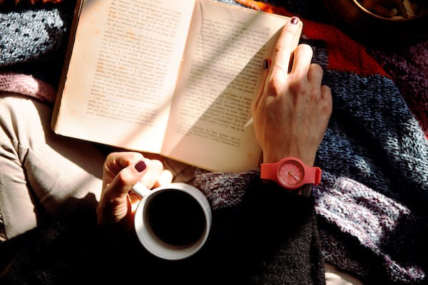

Ever since I can remember, reading has been my most cherished pastime, a wondrous journey through boundless realms of imagination and knowledge. From the moment I cracked open my first book, I was hooked, captivated by the power of words to transport me to far-off lands, introduce me to unforgettable characters, and immerse me in epic adventures. Fictional worlds unfurled before me like magic carpets, while non-fiction texts offered tantalizing glimpses into the mysteries of the universe. Poetry stirred my soul with its lyrical beauty, and essays challenged my intellect with their thought-provoking ideas. Through reading, I not only entertained myself but also expanded my understanding of the human experience, gaining empathy, wisdom, and perspective along the way.  As a child, I would lose myself for hours in the pages of my favorite stories, devouring everything from classic tales of heroism and romance to gripping mysteries and fantastical epics. Each book was a portal to another world, a secret garden where I could escape the cares of the world and lose myself in the wonders of the imagination. As I grew older, my tastes broadened, and I began to explore more diverse genres and authors, seeking out new voices and perspectives to enrich my reading experience. Today, reading remains an essential part of my daily life, a source of comfort, inspiration, and enlightenment in an increasingly chaotic world. Whether I'm curled up with a paperback on a rainy afternoon, listening to an audiobook during my daily commute, or browsing the shelves of my local bookstore in search of my next literary adventure, the joy of discovering new stories and ideas never fails to lift my spirits and ignite my imagination. For me, reading is more than just a hobby; it's a lifelong passion, a sacred ritual that nourishes my mind, heart, and soul. It's a journey of self-discovery, a quest for meaning and understanding in a world that often seems bewildering and inscrutable. And in the end, it's a reminder of the infinite possibilities that lie within the pages of a book, waiting to be explored and savored by anyone with the curiosity and courage to embark on the adventure.